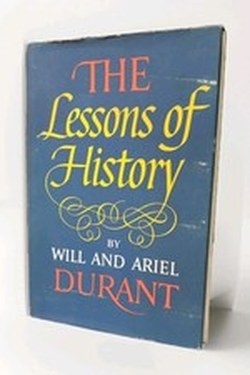

Library › History
The Lessons of History — Summary & Key Lessons

The Durants' lifetime of studying every civilisation, compressed into one astonishing little book.
📖 OPEN THE FULL INTERACTIVE BREAKDOWN →🌐 Read it in Hindi, Hinglish, Gujarati, Tamil & 22 more languages — free, with audio.
💡 The Big Idea
From five decades writing the 11-volume Story of Civilization, Will and Ariel Durant distilled the laws they saw: history is biography of human nature; inequality is natural and only constraint on it changes; freedom and order are in eternal balance; and character, not genius, carries civilisations. The book is a masterclass in seeing patterns across 5,000 years — and in humility about what we can know.
🧠 The 8 Key Lessons
Lesson 1: History Rhymes Because People Don't Change
Chapter 1: The Lessons
The Durants open with the punchline: the fundamental lessons of history are the lessons of human nature — desire, ambition, greed, loyalty, fear. Technology changes; incentives do not. That is why reading history is not antiquarianism: it is a compressed simulator of human behaviour, allowing you to smell patterns before they arrive.
📖 Example: Every currency collapse, from Rome's denarius to modern inflation, follows the same script: spend, debase, blame. Read the full example →
⚡ Do this: For one current-event story, find its closest historical echo — then ask what the echo suggests.
Lesson 2: The Big Three: Biology, Geography, Society
Chapter 2: The Determinants
The Durants rank the forces: biology (competition, fertility, growth), geography (climate and terrain set the stage), then economics, then politics, and only then religion and philosophy. Change the constraints — war, food, population — and the culture shifts. The modern translation: incentives and environment shape behaviour more than ideas do.
📖 Example: Agricultural surpluses created kings, priests and armies; the economy of surplus shaped the culture of scarcity's heirs. Read the full example →
⚡ Do this: For any problem you face, rank the forces: biology, environment, incentives, ideas — then fix the top one.
Lesson 3: Inequality Is Natural; Its Extremes Are Not
Chapter 3: Inequality
The Durants' most uncomfortable lesson: equality of outcome has never lasted anywhere — the capable accumulate, and every egalitarian experiment collapses into a new hierarchy. But inequality beyond a point destroys societies, because the poor lose stake. The realistic project is not equality but mobility and dignity under acceptable inequality.
📖 Example: Every revolution produced a new elite within a generation — the lesson of history is not equality but rotation. Read the full example →
⚡ Do this: In your own domain, check the curve: is the gap incentive-shaped or a moat built on rent?
Lesson 4: Freedom and Order
Chapter 4: The Pendulum
History is a pendulum between liberty and order: too much freedom breeds inequality and chaos; too much order breeds decay and revolt. The Durants argue that civilisations are already in decline when their elites stop using barbarian vitality and their people stop sharing the risks. Every generation must re-balance — none inherits peace cheaply.
📖 Example: The Roman Republic's freedom decayed into imperial order; the imperial order decayed into fragmentation — two swings of the same pendulum. Read the full example →
⚡ Do this: Where in your life is there too much order (rigid) or too much freedom (loose)? Re-balance one.
Lesson 5: The Real Lessons: Character, Modesty, Sex
Chapter 5: Character and the Future
The closing chapters are wonderfully frank: the heart of history is not economics but biology and character; nothing — including peace and power — is permanent; and history's only certainties are the stubborn constants of human appetite. The Durants end not with a prediction but with a prayer for modesty: the more we learn, the less we claim to know.
📖 Example: Every empire's elite, at its peak, believed the peak was permanent — the only constant is impermanence. Read the full example →
⚡ Do this: Write one sentence about where you are in your own personal pendulum — and what you would do differently.
Lesson 6: The Lesson of the Lessons
Chapter 12: What History Can't Do
The Durants end with humility: history is so rich and so contradictory that it 'will prove anything' — every generation finds its thesis confirmed somewhere in the record. History, therefore, cannot be used as proof or prophecy; it is a mirror of patterns, a museum of constants, which the wise consult humbly rather than enlist confidently.
📖 Example: Capitalists quote history for capitalism, socialists for socialism — both are quoting the same past; that is exactly why history cannot decide the argument. Read the full example →
⚡ Do this: Next time you cite history to support a view, write one line of what the same history could equally support.
Lesson 7: Geography Is the Mother of History
Chapter 2: Geography, Biology, Race
The Durants' first cause is terrain: rivers, mountains, climate and coastlines set the stage on which every civilization performs. India's mountain passes and long coasts made it a sponge of cultures; England's island moat made it a sea power; Russia's vastness swallowed invaders. Geography does not decide outcomes, but it deals the cards.
📖 Example: The same people, moved onto a different terrain, build a different history — the Mongols on the steppe and the Mongols in China were different nations. Read the full example →
⚡ Do this: Map your own terrain: the economics of your city, the structure of your industry, the geography of your market — before you plan your ambitions.
Lesson 8: Can We Learn from History at All?
Chapter 13: The Answer
The Durants' practical answer: if you must bet on the future, bet on the constants — human nature, family, competition, religion, the desire for property — not the variables. Technology changes the stage; the players do not. The most predictable part of the next decade is not the gadget but what people will still want from it.
📖 Example: Every 'new era' is the same play with new props: new currencies, old greed; new networks, old tribes. Read the full example →
⚡ Do this: Make one ten-year bet on a human constant (reputation, trust, craft) rather than on a trend — and write down why.
✅ 5-Step Action Plan
- Find the historical echo of one current event weekly.
- Rank the forces behind one problem: biology, environment, incentives, ideas.
- Check your own domain's inequality curve for rent vs. incentive.
- Re-balance one too-ordered or too-free area of life.
- Hold the modesty rule: the more you learn, the less you claim.
⚠️ When This Doesn't Work
The Durants wrote in the 1960s with Western-centric and sometimes dated views, and grand 'laws of history' are contested by professional historians. Treat it as wise pattern-spotting, not science.
💀 The Graveyard Proves It
📜 The Ottoman Printing Ban — The Empire That Said No to the Printing Press for 250 Years. Burn: Centuries of compounding knowledge Read the full case study →
💬 Best Quotes from The Lessons of History
- “History is the story of the actions of men in pursuit of power, wealth and sex — and the results.”
- “The laws of biology are the fundamental lessons of history: we are subject to the processes of competition and selection.”
- “Civilisation is not inherited; it has to be learned and earned by each generation.”
Interactive version: mark lessons as read, listen in your language, share quote cards.